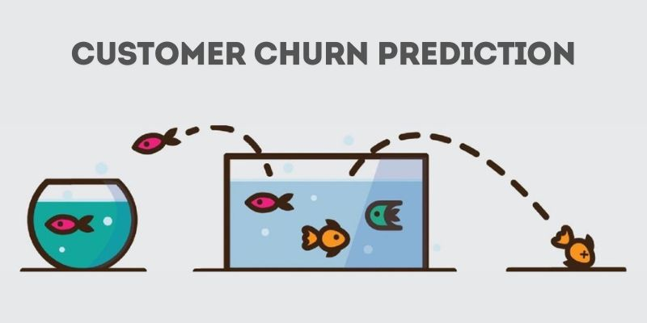
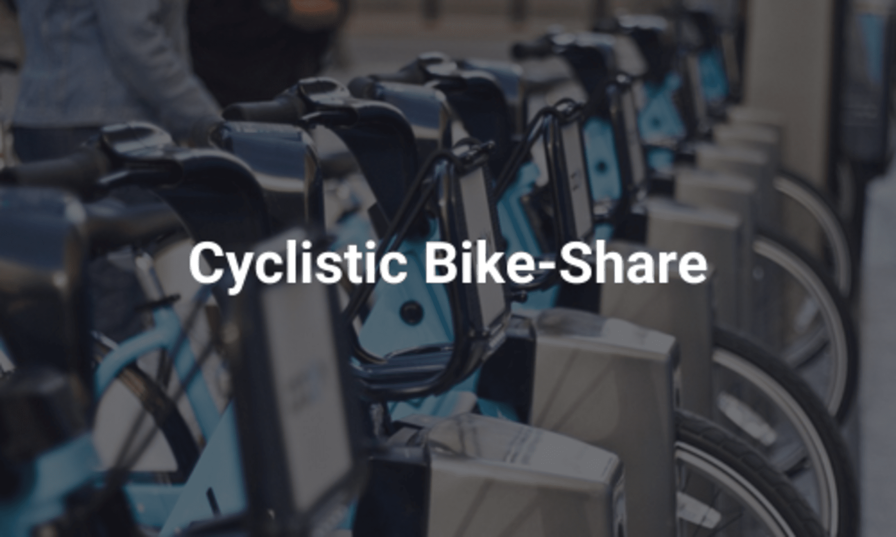

PROJECT
These projects demonstrate my proficiency in working with complex data sets
in exploration, statistics, and visualization.
Customer Churn Prediction
Created at June 30, 2024
 This project focuses on predicting customer churn. Companies need to know this prediction to map out business strategies to retain customers. Accurate churn prediction will empower companies to allocate resources effectively, personalize customer interactions, and finally strengthen customer satisfaction. Through data-driven insights, businesses can make informed decisions that drive loyalty and long-term growth.
Tools: Jupyter notebook, Python, GitHub, and Google sheet.
Cyclistic Bike-Share Analysis
Created at October 29, 2023
 This project collects, analyzes, and reports data to inform Cyclistic’s marketing strategy. By identifying trends and insights into customer behavior, the project aims to support strategic decisions that will maximize the number of annual memberships, a key driver of Cyclistic’s future growth. Through targeted marketing efforts based on data-driven insights, Cyclistic can focus on attracting and retaining members, finally strengthening long-term customer loyalty and revenue.
Tools: Jupyter notebook, R, Github, Tableau and Google sheet.